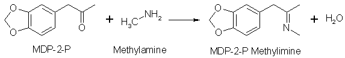
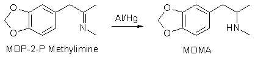

Who Needs Methylamine Anyway?By Ritter, edited by the Professor, Dedicated to EleusisPublished in Total Synthesis II by Strike The following procedure may prove to be one of the largest advances in the field of MDMA chemistry since the perfection and dissemination of the Wacker oxidation procedure for producing MDP2P. This reaction is based on a published process that somehow has escaped discovery by underground chemistry until now. Methylamine is no longer a stumbling block in the aluminum amalgam reductive alkylation method of producing MDMA as this procedure produces this impossible to obtain and fickle to make material, in situ, during the reductive alkylation of MDP2P to MDMA from very common nitromethane. Nitromethane when subjected to the simplest of reductions forms methylamine, so why not make methylamine at the same time MDMA is being produced instead of going through the hassle of making it separately? Nitromethane is a very common material. Just go down to your local drag strip and pick up a gallon or two for doping your high performance car’s fuel. It’s also available up to 40% pure in RC model fuels. Simply fractionally distill the nitromethane (bp 101°C) out of the model fuel mixture and you’re ready to go. If methanol is present in the fuel formulation, some will azeotropically distill over with the nitromethane lowering its boiling point slightly, but this does not present a problem. So, how does this whole thing work? It’s as simple as it sounds. An alcoholic solution of nitromethane and MDP2P is dripped into a mass of amalgamated aluminum immersed in alcohol first reducing the nitromethane to methylamine, allowing the Schiff base of the amine and ketone to form which is further reduced to the desired MDMA.   Set up a 2 liter two or three-neck flask with an addition funnel and a reflux condenser and provide with a heat source. Not much heat is needed here so anything from a water bath on a buffet range to a heating mantle is fine. Stuff 55 grams of one-inch squares of aluminum foil into the flask. An important topic must be addressed here which has been formerly neglected to a confusing degree – the proper type and thickness of the foil. The problem with aluminum amalgam reductions is that their reaction rate is dependent on three major factors, and depending on how you play these factors you may either have a complete failure or an explosion, or better yet if you follow this advice, a perfect yield! These factors are the mentioned foil type, the degree of amalgamation allowed by HgCl2 solution before ketone and amine are reacted, and finally, the temp the reaction runs at. Thick foil tends to react slowly at a low temp and very thin foil, such as generic food grade aluminum foil, tends to react so fast and exothermically you can literally shit your pants! The aluminum, which produced the best results, is widely available to the industrial biological community in the form of 4" x 4" sheets .04mm thick neatly separated from each other with a sheet of tissue paper. It is used for sealing flasks and the like before they are autoclaved. For those of you who can’t get this, don’t worry. Heavy Duty Reynolds Wrap will work fine, only a more careful eye must be kept on the reaction rate. Others have reported success using cut up pie tins. The main idea is don’t use real thin foil. Fill the separatory funnel with 50 grams of MDP2P and 50 grams or 39ml nitromethane dissolved in 200ml methanol. In another 1 liter vessel, add 1.5g HgCl2 (mercuric chloride) to a liter of methanol and allow all solids to dissolve. Very carefully (HgCl2 is deadly poisonous!) pour the methanolic solution of HgCl2 onto the aluminum foil pieces in the flask and stand back and watch the magic begin. If all the foil isn’t covered by the methanol just add more until it is. In a few minutes effervescence will begin and the reaction may be started. After about 5-10 minutes the bubbling should be sufficient and you may start adding the methanolic mixture of nitromethane and MDP2P drop by drop from the separatory funnel. As time progresses the reaction may heat up to the point of boiling and refluxing of the alcohol will occur. This is no problem as the 65°C boiling point of methanol is perfect for this reaction (I know many disagree, but dream about this and you’ll see!) The addition should take roughly one hour and the mixture should be allowed to react for at least 4-6 hours after or until all pieces of aluminum are reacted into gray suspension. Temperature control needs to be addressed here. If the reaction proceeds under ideal conditions, it will run exactly as described above. If less than ideal and more commonly, the reaction will start to slow down halfway through requiring external heating to maintain a good reaction rate. If the Greater Powers are really against you, an addition of another gram of HgCl2 in methanol solution to the mix will kick it back in. Now the easy part – isolating your product. One of the most attractive features of this new synthesis is that the standard Al/(Hg) amination mixture must be tediously filtered to separate the product from the spent aluminum hydroxide sludge at this point. The following remedies this most frustrating step and will probably give many a new outlook on the potential of the Al/(Hg) reduction. Mix up about 1.5 or 2 liters of 35% NaOH solution and allow to cool. Slowly add the gray aluminum gook produced in the first reaction to the NaOH solution and pour into a large separatory funnel. Two distinct layers will appear after sitting for maybe an hour, the top being a reddish alcoholic solution of product and the bottom garbage NaOH/Al(OH)3. Simply separate off the garbage bottom layer and discard. Don’t worry, there’s no product tied up in it, and remember that no filtration is needed anywhere in this recovery process compared to other synths out there! Take the top layer and evaporate off the methanol to give an amazing yield of impure amine and a little bit of water. Unscrupulous souls not worth their weight in shit can take this product and crystallize it directly but there is a lurking deadly poison in it at this point – solvated mercury salts! These can be easily removed by dissolving the crude product in about a liter of toluene and washing it with several portions of water in a separatory funnel and finally with a saturated NaCl solution. Dry the toluene with about 50g anhydrous MgSO4 made by heating drug store epsom salts in the oven at 400 degrees Fahrenheit for an hour, cooling then powdering. After sitting for an hour or until the toluene is no longer cloudy, chill the dried toluene solution of freebase in the freezer and bubble away with HCl gas to produce beautifully pure MDMA hydrochloride crystals. If they are a little discolored they can be cleaned up with an acetone rinse to pristine purity with no mercury contamination! Also see Methyl Man's variation of this reaction. Reference: Chem. Abs., 51 11278 (1957) |